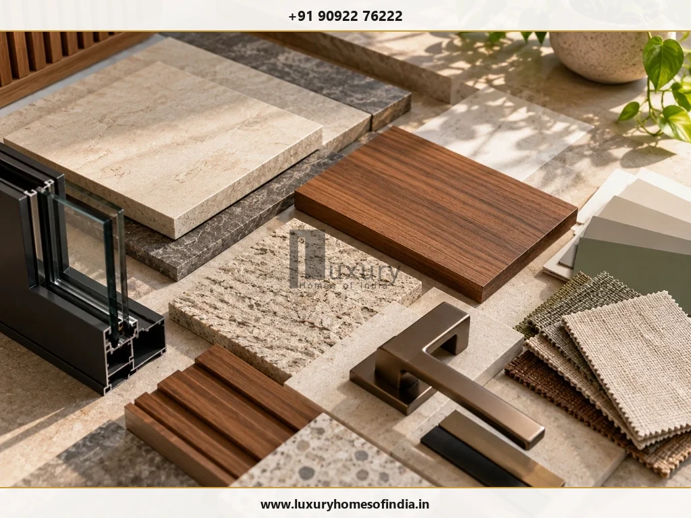
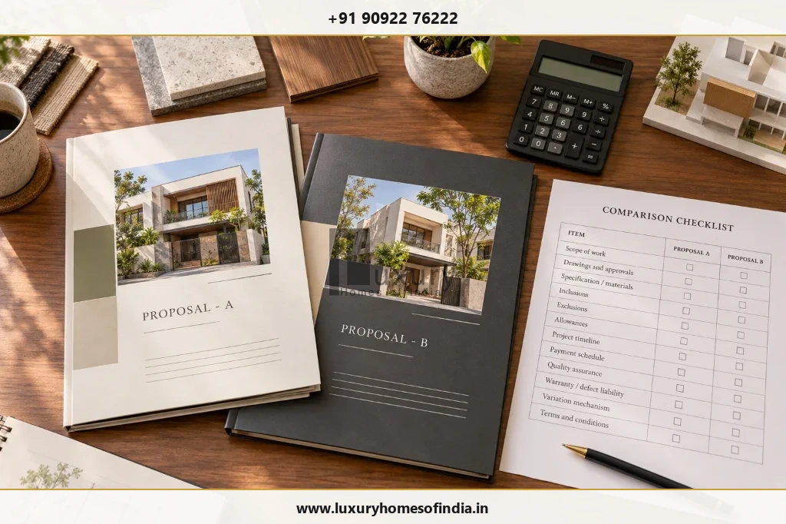

Premium Home Construction in Chennai: A Homeowner’s Guide to Quality, Specifications and Cost
Understanding technical specifications, structural engineering, contractor quotation comparisons, and realistic budgeting for luxury residences.
Executive Summary: Homeowner's Quality & Cost Guide
Premium home construction in Chennai is defined by coordinated space planning, site-specific structural engineering, itemized material specifications, and transparent commercial contracts. Homeowners should evaluate daylight orientation, solar heat defense, waterproofing membranes, sub-surface drainage, and contractor quotation inclusions rather than relying on headline cost per sq. ft. figures alone. Luxury Homes of India unifies architectural planning, civil construction, structural engineering, and luxury interior execution under a single master workflow.
What Does Premium Home Construction Actually Mean?
Premium construction is not defined by one single product, one surface finish, or a high price per square foot. It is the result of coordinated decisions that make a home functional, thermally comfortable, easy to maintain, and aligned with its owner's lifestyle priorities.
A structured approach to evaluating quality focuses on five core pillars:
- Planning: Optimizing room proportions, circulation paths, privacy boundaries, storage capacity, and indoor-outdoor garden transitions.
- Engineering: Developing site-specific structural foundation designs and coordinating architectural layouts with mechanical building systems.
- Specifications: Defining exact material grades, brand schedules, installation standards, and pre-approved alternative selection rules.
- Execution: Performing site civil works against verified structural working drawings and enforced quality inspection checklists.
- Handover: Conducting system pressure testing, snagging audits, product warranty documentation, and long-term maintenance training.
An expensive marble floor cannot compensate for an impractical room layout or a poorly detailed roof waterproofing joint. Before selecting luxury finishes, establish what the building needs to execute well every day.

Essential Premium Home Construction Services
Architectural Design & Space Planning
Start with the household's routines, plot orientation, and space requirements. Discuss circulation paths, natural daylight, privacy, and outdoor connections before finalizing floor plan layouts. Vastu preferences can be integrated during early conceptual planning alongside structural grids.
Structural Engineering
Structural engineering must respond to plot soil test reports, building massing, and architectural features like column-free living rooms, cantilevers, or double-height volumes. Foundation design and framing details should be certified by licensed structural engineers prior to breaking ground.
Turnkey Construction Execution
A turnkey proposal should explicitly define the scope included in the master agreement. Confirm whether civil works, MEP building services, factory interior joinery, external paving, and snagging handover are included. Do not assume every specialist item is included simply because a proposal uses the term "turnkey."
Luxury Interior Execution
Flooring, modular kitchens, custom wardrobes, false ceilings, lighting layouts, and bespoke furniture must function as a unified scheme. Evaluate material choices for long-term cleaning, durability, and replacement ease, in addition to initial visual appearance.
Smart-Home Automation Integration
Identify daily automation priorities like centralized lighting control, motorized curtains, and security integration. Coordinate electrical conduit routing, low-voltage cabling, server panel locations, and maintenance access before plastering and false ceiling installation.
How to Evaluate a Premium Construction Specification
Technical Specification Evaluation Matrix
| Construction Element | Technical Questions to Resolve Before Approval | Recommended Specification Standard |
|---|---|---|
| Structure & Foundation | What soil test findings and engineering drawings govern execution? | M30 grade RCC concrete, Fe550D TMT rebar, anti-termite dosing. |
| Waterproofing | Which wet areas are covered and what testing procedure applies? | Dual-layer elastomeric membrane, 48-hr water ponding test. |
| Windows & Doors | What frame material, glazing thickness, and weather seals apply? | Double-glazed Low-E glass, thermal-break aluminum frames. |
| Flooring | What stone/tile grade, substrate preparation, and sealer apply? | Imported Italian marble / large format GVT tiles with epoxy grout. |
| Kitchen & Joinery | Which substrate board, laminate/veneer grade, and hardware apply? | BWP grade plywood, Blum/Hafele soft-close hardware, quartz tops. |
| Bathrooms | What sanitary brands, concealed valves, and access panels apply? | Grohe/Kohler thermostatic valves, wall-hung WC with push frames. |
| Electrical & Lighting | What wire fire rating, switch brands, and point counts apply? | Finolex/Havells FFR copper wiring, modular touch switches, LED drivers. |
| Plumbing & Cooling | What pipe materials, pressure testing, and AC drain routes apply? | Ashirvad CPVC/UPVC pipes, hydro-pressure test, VRV/VRF AC ducting. |
| External Works | Are boundary walls, motor gates, pavers, and sumps included? | Compound wall with stone cladding, automatic gates, rainwater sumps. |

How to Compare Contractor Quotations
Two contractor quotations are not directly comparable if they describe different scopes. A lower headline price may exclude critical civil works, while a higher proposal may include complete interior joinery and external landscaping.

Factors Influencing Premium Construction Costs in Chennai
Construction cost depends on architectural complexity, site soil load-bearing capacity, selected specifications, and contract scope. Built-up area is an initial reference, but it does not tell the full budget story.
- Site Soil Conditions: Isolated column footings vs. deep pile foundations based on soil test reports.
- Structural Complexity: Column-free long spans, cantilevered floor slabs, and double-height living room frames.
- Facade & Windows: Large format double-glazed Low-E aluminum sliding systems vs. standard UPVC windows.
- MEP Building Services: VRV/VRF central air conditioning, home automation cabling, and solar power integration.
- Interior Joinery: Factory-fabricated BWP plywood wardrobes, modular kitchens, and custom hardwood paneling.
Pre-Construction Quality Checklist
| Stage | Quality Control Checkpoint | Verification Action Required |
|---|---|---|
| Pre-Site | Plot survey & soil testing | Verify boundary markers and certified soil load capacity report. |
| Design | Coordinated working drawings | Approve architectural, RCC structural, and MEP overlay drawings. |
| Materials | Specification & brand approval | Approve physical material sample boards and brand schedules. |
| Commercial | Contract terms & milestones | Review payment schedule, variation rules, and penalty clauses. |
| Site QA | Inspection & testing protocol | Enforce rebar steel cage inspection, slump test, and ponding tests. |
| Handover | Snagging & documentation | Execute joint snagging audit, receive as-built plans & warranties. |
Start Your Construction Project with a Clear Brief
Bring your plot details, design ideas, and budget expectations. Speak with Luxury Homes of India about our integrated architectural design, structural engineering, and turnkey construction services.